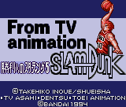

Slam Dunk - Game Gear Games

Controls
- A button: Shoot/Steal
- B button: Pass/Block
- Start: Pause
You can compete in a story mode, a VS CPU mode, and a VS Human mode. No other information available at this time.
Anime Video Game Resource Center © 1998 by Luis A. Cruz